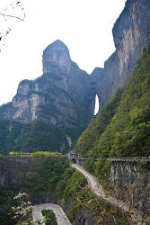
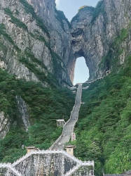
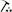
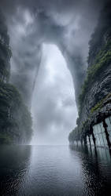
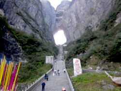
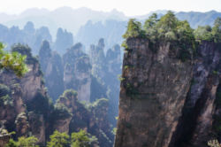
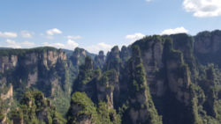
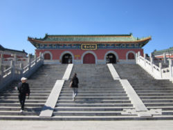

天门洞
Tianmen Dong - Tianmen Cave - Gate to Heaven


Useful Information
| Location: |
Zhang Jia Jie / Zhangjiajie, western Hunan Province.
8 km from the city center.
(29.0514648, 110.4827393) |
| Open: |
Tianmenshan Cableway:
All year daily 8-16. [2026] |
| Fee: |
Scenic Area:
Adults CNY 285, Children (14-17) CNY 152, Students CNY 152, Seniors (60-64) CNY 152, Seniors (65+) CNY 116. Mandatory Insurance CNY 3. Tianmenshan Cableway: Adults CNY 275, Discounted CNY 144. Escalator: Adults CNY 32. [2026] |
| Classification: |
 Karst Cave Karst Cave
 Natural Bridge. |
| Light: | n/a |
| Dimension: | H=131.50 m, W=57 m, L=60 m, A=1,300 m asl. |
| Guided tours: | self guided, D=6 h. |
| Photography: | allowed |
| Accessibility: | yes |
| Bibliography: | |
| Address: | Tianmen Dong. |
| As far as we know this information was accurate when it was published (see years in brackets), but may have changed since then. Please check rates and details directly with the companies in question if you need more recent info. |
|
History
| 263 | cave opened by a collapse. |
| 11-DEC-1999 | Guiness Book of Records challenge cave flight. |
| OCT-2002 | first Chinese naked poetry happening in the cave. |
| 2005 | cable car constructed by the French company Poma from Zhangjiajie railway station to the top of the mountain. |
| 17-MAR-2006 | the Russian Knights fly through the cave. |
| 2016 | glass skywalk Coiling Dragon Cliff overlooking Tongtian Avenue opened to the public. |
Description





天门洞 (Tianmen Dong, Gate to Heaven Cave) is somewhere between an arch and a through-cave, but although it is generally called a cave, we classify it as a natural bridge. A huge opening in the steep cliff face of Mount Tianmen (1,518 m asl), which is 130 m high and about 30 m wide. There is a huge staircase leading up to the natural bridge and a platform was built into the cave which is at 1,300 m asl. The staircase is legendary for having 999 steps. The natural bridge crosses a part of the mountain, a rock with vertical walls, which is about 70 m thick, which results in a cave length of 60 m, about half its height. This fits the definition of an arch or natural bridge.
Tianmen translates Gate to Heaven, which is unfortunately a very generic and common name. If you search OSM you will find six caves of that name, it is also the name of a sort of asparagus roots, and also the name of an infamous square in Peking, on which students were attacked by tanks. As always, it may confuse, causes mix-ups and leads to wrong search results. We added "Zhangjiajie Hunan" to the search to make it more specific.
Really exceptional is the history of this cave. The impressive collapse of the cliff face, which opened the cave, is documented. It happened in the sixth year of the Wuyong Period of the Three Kingdoms, which is the year 263. At this time the mountain was called Songliang, which was then changed to Tianmen. The Tianmenshan Temple on the summit of the mountain, above the natural bridge, was erected during the Tang dynasty around 870. It is the Buddhist center of western Hunan, a center of pilgrimage since the Ming Dynasty. The collapse of the mountain with the opening of the cave in 263 AD is one of the so-called six unresolved mysteries. The other five are the mysterious spring in the middle of the cliff face which produces water even during droughts, the wandering of the natural bridge, which was once visible from spots where it is not visible any more, Ye Fu’s Treasure, which is hidden since the end of Ming dynasty, the face of the legendary philosopher and strategist Guiguzi, which is said to have appeared on a rock face, and finally the appearance of a unicorn on the mountain.
Tianmen Mountain is a part of the cockpit karst around the Yangtze River. It is an enormous karst tower, with steep walls and a small plateau on top, which is covered by an intact sub-primitive forest. Most of those karst towers are about 1,500 m asl, while the valleys are only about 150 m asl. The typical karst landscape, with limestone rocks covered by a very thin layer of earth, in combination with the local climate, create a natural bonsai garden.
Tianmen Dong became world-famous, when a group of stunt pilots crossed it first by plane in 1999. It was an attempt to become listed in the Guinness Book of Records for the first time a cave was crossed by plane. The flight was shown on TV and watched by 800 Million people around the world. Another flight through the cave was made by the Russian Knights, five Russian SU-27 fighter jets which crossed the cave in 2006.
The natural bridge became a famous tourist destination after the construction of the road. Originally there were only hiking trails, the road was started in 1998 and completed in 2005, it has 99 hairpin bends and ends below the cave. It was obviously very difficult to build this road up the steep gorge, and it is an impressive sight from the cable car, with its numerous hairpin curves. Interesting is the fact that the road was started one year before the site became famous, obviously the flight was an early attempt to make the place popular. Such events were made almost every year since then, free climbers, base jumpers, and wingsuit flyers frequent the site. Buses run between the entrance to the scenic area in the valley and the end of the road. From here a series of 999 stairs leads up to the arch. As you can see: the digit 9 is quite popular, based on the idea that there are nine heavens. The arch is also accessible by the 天门山索道 (Tianmen Mountain Cable Car), which is 7,455 m long and ascends 1,277 m. It is sometimes said to be the longest passenger cableway in the world, but that’s wrong, or probably outdated. The website City Viking states that it is on place 10 and there is even a longer one in China, Xuefeng Mountain Cableway. The cable car ends close to the summit and offers a comfortable access both to the temple and the glass skywalk Coiling Dragon Cliff, which was opened in 2016. There is an outlook on the staircase and several sections of glass skywalk around the karst tower. And there is a restaurant named 味从山林 (Flavours from the Mountains and Forests).
Today the whole karst tower is protected as 天门山国家森林公园 (Tianmen Mountain National Park). It is also a national 5A scenic area, the parking lot and entrance buildings are located at the southern side of Guanliping, follow Y104 to the end. From here a short cable car, which is also called Line C or express cable car connects the mountain gate to the square below the cave. From here you can either walk the 999 steps to the cave or you may take a five-stage escalator, but this escalator has an additional fee. The entrance fee is for the scenic area, and includes the other rides, the cable car as well as the escalator on top of the mountain. After crossing the cave you may use a seven-stage underground escalator to the summit. Here you may walk the various glass floor skywalks and visit the temple. Return on the same way. We recommend to make this a full day visit, if you hurry you may be able to do it in 4 to 5 hours. Be careful with the return cable car ride, if you are too late you have to walk down.
The long cable car is a good alternative, because if you arrive by train, you can enter it directly. Unfortunately, since [OCT-2026] the cable car is closed completely for maintenance work, so only Line C remains for the near future. There is now a free shuttle bus from the train station to the park entrance, the ride takes about 20 minutes. The road with its 99 bends has never been open for private cars. The park’s own buses used it and maintained a shuttle service. This was discontinued in [OCT-2026] and as far as we understand this was final, the buses are replaced by the new cable car.
- See also
- Guiness World (Cave) Records
 Search DuckDuckGo for "Tianmen Dong Zhangjiajie Hunan"
Search DuckDuckGo for "Tianmen Dong Zhangjiajie Hunan" Google Earth Placemark
Google Earth Placemark OpenStreetMap
OpenStreetMap Tianmen Mountain - Wikipedia (visited: 24-OCT-2026)
Tianmen Mountain - Wikipedia (visited: 24-OCT-2026) 天门洞 (visited: 25-OCT-2026)
天门洞 (visited: 25-OCT-2026)- Tianmen Cave & the 999 Steps: Heaven’s Gate, Zhangjiajie (visited: 25-OCT-2026)
- The six old mysteries of Tianmenshan Mountain (visited: 25-OCT-2026)
 Index
Index Topics
Topics Hierarchical
Hierarchical Countries
Countries Maps
Maps